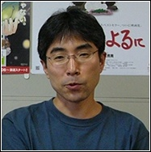

Tomomi Mochizuki

.Qui est Tomomi Mochizuki ?
Né le 31 décembre 1958 à Hokkaido au Japon. Il est réalisateur japonais de film d'animation.
Ses débuts et son intégration
Il est marié avec Goto Masako.
Il débute sa carrière cinématographique à partir de 1981.
Les longs Métrages
- Max et Compagnie en 1988.
- Je peux entendre l'océan en 1993.
- Oshare Majo Love and Berry en 2007.
Série Televise
- Tokimeki Tonight de 1982 en 1983.
- Ninjaman Ippei en 1982.
- Creamy, merveilleuse Creamy de 1983 en 1984.
- Emi magique de 1984 en 1985.
- Lamu en 1985.
- Touch de 1985 en 1987.
- Cynthia ou le rythme de la vie en 1986.
- Maison ikkoku en 1987.
- Project A-ko en 1987.
- Twilight Q en 1987.
- Malicieuse Kiki de 1987 en 1989.
- Ranma en 1989.
- Chunpui de 1989 en 1991.
- Tasuke, the Samurai Cop en 1990.
- Ore wa Chokkaku en 1991.
- Here is Greenwood de 1991 en 1993.
- Nintama Rantaro en 1993.
- Dan et Danny Flash en 1994.
- Tanjou en 1994.
- Fushigi Lala en 1995.
- Aka-Chan to Boku de 1996 en 1997.
- Brave commmand Dagwon de 1996 en 1997.
- Boku no Mary en 1996
- Yakumo Tatsu en 1997.
- Princess Nine en 1998.
- Sentimental Journey en 1998.
- Fancy Lala en 1998.
- Gasaraki de 1998 en 1999
- Angel Links en 1999
- Power Stone en 1999
- Seraphim Call en 1999.
- Mighty cat Masked Niyandar de 2000 en 2001.
- Argento Soma de 2000 en 2001.
- S-CRY-ed en 2001.
- I My Me! Strawberry Eggs en 2001.
- Geneshaft en 2001.
- Gundam Neo Experience 0087 Green Divers en 2001.
- Ailes Grises en 2002.
- Okojo-san en 2002.
- RahXephon en 2002.
- Yokohama Kaidashi Kiko de 2002 en 2003.
- Hanada shonen-shi de 2002 en 2003.
- Yami to Boshi to Hon no Tabibito en 2003
- Scrapped Princess en 2003.
- Twin spica de 2003 en 2004.
- Astro Boy - 2003 en 2004.
- Zorori le magnifique en 2004.
- Superior Defender Gundam Force en 2005.
- Zettai Shonen en 2005.
- Eureka Seven de 2005 en 2006.
- Yoshimune en 2006.
- Kujibiki Unbalance en 2006.
- Shinigami no ballad en 2006.
- Code Geass de 2006 en 2007.
- The Galaxy Railways en 2007.
- Toka Gettan en 2007.
- Porphy no Nagai Tabi en 2008.
- House of Five Leaves en 2010.
- Que sa volonte soit faite de 2010 en 2011.
- Starry Sky de 2010 en 2011.
- Sekaiichi Hatsukoi en 2011.
- Deadman Wonderland en 2011.
- The Idolmaster en 2011.
- Mashiroiro Symphony en 2011
- Secret service en 2012.
les longs Metrages de Tomomi Mochizuki.